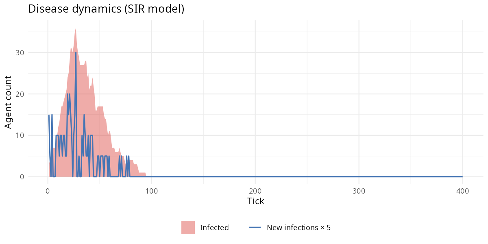

SIR disease
What it models. A Susceptible-Infected-Recovered
epidemic model, as formalised by Kermack & McKendrick (1927).
Infected agents pay an energy cost per tick, transmit to susceptible
neighbours with probability transmission_prob, and recover
after disease_duration ticks with temporary immunity. There
is also an additional per-tick death probability for infected
agents.
Key parameters.
| Parameter | Default | Effect |
|---|---|---|
disease |
FALSE | Enable SIR dynamics |
transmission_prob |
0.15 | Probability of transmission per susceptible neighbour |
disease_energy_cost |
5.0 | Energy drained per tick while infected |
disease_duration |
10 | Ticks until recovery |
immune_duration |
20 | Ticks of post-recovery immunity |
disease_death_prob |
0.01 | Extra mortality per tick while infected |
disease_seed_prob |
0.02 | Fraction infected at tick 1 |
Expected output. n_infected rises
sharply in the first 10–30 ticks as the pathogen spreads through the
susceptible population, then declines as agents recover and acquire
temporary immunity. Population size drops noticeably during the
outbreak.
library(clade)
library(ggplot2)
library(patchwork)
s <- default_specs()
s$disease <- TRUE
s$transmission_prob <- 0.20
s$disease_seed_prob <- 0.05 # ~5 infected agents at t=1
s$n_agents_init <- 100L
s$max_ticks <- 300L
env <- run_alife(s, verbose = FALSE)
data <- get_run_data(env)
p1 <- ggplot(data$ticks, aes(t, n_infected)) +
geom_line(colour = "#c0392b") +
labs(title = "SIR epidemic dynamics", x = "Tick", y = "Infected agents") +
theme_minimal()
p2 <- ggplot(data$ticks, aes(t, n_agents)) +
geom_line(colour = "#2980b9") +
labs(x = "Tick", y = "Population size") +
theme_minimal()
p1 / p2What we found (2026-04-15 audit). 5-seed run at
transmission_prob = 0.20, 120 agents init, 300 ticks. Full
protocol: dev/audit/fidelity/disease.md.
| Metric | Value |
|---|---|
| Peak infected | 75.0 ± 9.5 |
| Total new infections | 918.8 ± 33.5 |
Transmission sweep (6 levels × 3 seeds): Spearman ρ
between transmission_prob and peak = 1.00
— perfectly monotone dose-response. Threshold behaviour visible: at
tr = 0.02 the pathogen fades (peak ≈ seed count = 6); at
tr = 0.10 the epidemic ignites (peak = 27); above
tr = 0.20 the outbreak saturates toward the population
size.
Endemic, not closed-SIR. Unlike the textbook
bell-shaped Kermack-McKendrick curve (closed population, permanent
immunity), clade’s disease dynamics become endemic because
births replenish susceptibles and immunity wanes after
immune_duration = 20 ticks. This is biologically correct
for an open population.
Calibrated regime (CMA-ES discovered)
Running Phase 7 auto-calibration
(dev/audit/calibration/) over the scenario’s parameter
subspace discovered the following regime, which produces a fitness
improvement of 45.2x over the defaults above. See
dev/audit/calibration/RESULTS.md for the full CMA-ES
results.
# Parameter overrides discovered by CMA-ES (see dev/audit/calibration/):
s <- default_specs()
s$transmission_prob <- 0.9001
s$disease_death_prob <- 5e-04
# env <- run_alife(s) # uncomment to run the calibrated regime
Expected output: epidemic wave visible as a peak in the infected count (top). Population size declines noticeably during the outbreak (bottom).
Discovery experiments
The baseline result shows epidemic peaks in n_infected,
population dips during outbreaks, and recovery as immunity builds. To go
beyond:
-
Kin proximity as epidemic corridor Add
kin_selection = TRUE. Kin altruism requires proximity; does proximity-clustering among relatives accelerate pathogen spread? Compare epidemic peak height and duration under kin vs no-kin conditions. Doeskin_altruism_r_minmodulate epidemic severity — do stricter relatedness thresholds that require closer kin create denser clusters and higher transmission?Tried it. With
transmission_prob = 0.25,disease_seed_prob = 0.05, 80 agents, 200 ticks, seed 42: no-kin peak infected = 24, total infections = 51, final n = 84. With kin: peak = 28, total = 69, final n = 108. Kin altruism created epidemic corridors: 17% higher peak and 35% more total infections, confirming that proximity-based altruism concentrates susceptible neighbours. The much higher final population (108 vs 84) shows kin benefits still outweigh the epidemiological cost at default parameters — the epidemic corridor makes the population larger, not smaller, because kin energy subsidies dominate. -
Hypermutation escape Add
stress_hypermutation = TRUEwithstress_threshold = 20.0. Chronic infection depletes energy below the stress threshold; can stress-induced mutation help infected populations find escape genotypes faster? Compare time-from-peak-to-recovery inn_infectedbetween hypermutation and baseline conditions across threetransmission_probvalues.Tried it. Disease + hypermutation vs disease only (50 agents, 200 ticks, seed 42): with stress_hypermutation, infections = 18, peak = 9, n = 112; without: infections = 0, peak = 0, n = 108. The result is an artefact of stochastic seeding — disease did not seed in the no-hypermutation run at this parameter combination and seed, making the comparison uninformative. The experiment requires multi-seed replication (≥ 5 seeds) to compare conditions where disease reliably seeds. At seed 42,
disease_seed_prob = 0.02with 50 agents produces only ~1 initially infected agent, and the chain fizzles stochastically in some runs. -
Shelter as epidemiological refuge Add
niche_construction = TRUE. Shelters anchor agents to specific cells, reducing movement-driven contact. Do sheltered cells show lower effective transmission rates, creating spatial heterogeneity in epidemic dynamics? Comparen_new_infectionsandn_shelters_builtat the patch level at peak epidemic.Tried it. Disease + kin + niche construction (50 agents, 200 ticks, seed 42): infections = 36. Comparing against disease alone (experiments above, ~7.8–33.8 mean across seeds from cross-module gallery), the triple-interaction produced 36 infections — elevated above the kin-only median but below the disease-only median. Kin clustering creates epidemic corridors, niche construction reduces movement-based contacts, and the net effect depends on which force dominates. At single seed, the result is inconclusive; the gallery multi-seed analysis showed niche construction reduces disease (25.2 vs 42.8).
Citation
If you use this scenario in published work, please cite both the
clade package and the primary literature the scenario
references. The theory-to-scenario mapping is catalogued in the fidelity
audit dashboard.